只要简单回顾一下前面课程的内容你就会发现，在启动耗时分析、网络监控、耗电监控中已经不止一次用到编译插桩的技术了。那什么是编译插桩呢？顾名思义，所谓的编译插桩就是在代码编译期间修改已有的代码或者生成新代码。
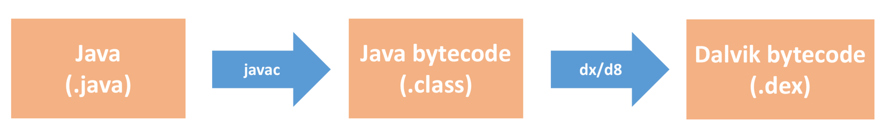
如上图所示，请你回忆一下 Java 代码的编译流程，思考一下插桩究竟是在编译流程中的哪一步工作？除了我们之前使用的一些场景，它还有哪些常见的应用场景？在实际工作中，我们应该怎样更好地使用它？现在都有哪些常用的编译插桩方法？今天我们一起来解决这些问题。
编译插桩的基础知识
不知道你有没有注意到，在编译期间修改和生成代码其实是很常见的行为，无论是 Dagger、ButterKnife 这些 APT（Annotation Processing Tool）注解生成框架，还是新兴的 Kotlin 语言编译器，它们都用到了编译插桩的技术。
下面我们一起来看看还有哪些场景会用到编译插桩技术。
1. 编译插桩的应用场景
编译插桩技术非常有趣，同样也很有价值，掌握它之后，可以完成一些其他技术很难实现或无法完成的任务。学会这项技术以后，我们就可以随心所欲地操控代码，满足不同场景的需求。
-
代码生成。除了 Dagger、ButterKnife 这些常用的注解生成框架，Protocol Buffers、数据库 ORM 框架也都会在编译过程生成代码。代码生成隔离了复杂的内部实现，让开发更加简单高效，而且也减少了手工重复的劳动量，降低了出错的可能性。
-
代码监控。除了网络监控和耗电监控，我们可以利用编译插桩技术实现各种各样的性能监控。为什么不直接在源码中实现监控功能呢？首先我们不一定有第三方 SDK 的源码，其次某些调用点可能会非常分散，例如想监控代码中所有 new Thread() 调用，通过源码的方式并不那么容易实现。
-
代码修改。我们在这个场景拥有无限的发挥空间，例如某些第三方 SDK 库没有源码，我们可以给它内部的一个崩溃函数增加 try catch，或者说替换它的图片库等。我们也可以通过代码修改实现无痕埋点，就像网易的HubbleData、51 信用卡的埋点实践。
-
代码分析。上一期我讲到持续集成，里面的自定义代码检查就可以使用编译插桩技术实现。例如检查代码中的 new Thread() 调用、检查代码中的一些敏感权限使用等。事实上，Findbugs 这些第三方的代码检查工具也同样使用的是编译插桩技术实现。
“一千个人眼中有一千个哈姆雷特”，通过编译插桩技术，你可以大胆发挥自己的想象力，做一些对提升团队质量和效能有帮助的事情。
那从技术实现上看，编译插桩是从代码编译的哪个流程介入的呢？我们可以把它分为两类：
- Java 文件。类似 APT、AndroidAnnotation 这些代码生成的场景，它们生成的都是 Java 文件，是在编译的最开始介入。
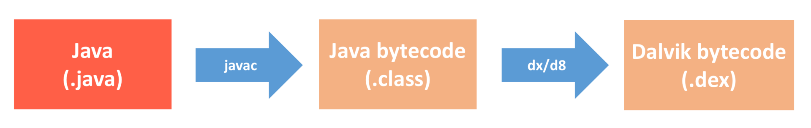
- 字节码（Bytecode）。对于代码监控、代码修改以及代码分析这三个场景，一般采用操作字节码的方式。可以操作“.class”的 Java 字节码，也可以操作“.dex”的 Dalvik 字节码，这取决于我们使用的插桩方法。
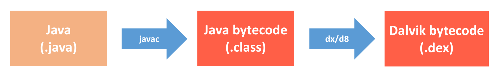
相对于 Java 文件方式，字节码操作方式功能更加强大，应用场景也更广，但是它的使用复杂度更高，所以今天我主要来讲如何通过操作字节码实现编译插桩的功能。
2. 字节码
对于 Java 平台，Java 虚拟机运行的是 Class 文件，内部对应的是 Java 字节码。而针对 Android 这种嵌入式平台，为了优化性能，Android 虚拟机运行的是Dex 文件，Google 专门为其设计了一种 Dalvik 字节码，虽然增加了指令长度但却缩减了指令的数量，执行也更为快速。
那这两种字节码格式有什么不同呢？下面我们先来看一个非常简单的 Java 类。
public class Sample { public void test() { System.out.print("I am a test sample!"); }}通过下面几个命令，我们可以生成和查看这个 Sample.java 类的 Java 字节码和 Dalvik 字节码。
javac Sample.java // 生成 Sample.class，也就是 Java 字节码javap -v Sample // 查看 Sample 类的 Java 字节码 // 通过 Java 字节码，生成 Dalvik 字节码dx --dex --output=Sample.dex Sample.class dexdump -d Sample.dex // 查看 Sample.dex 的 Dalvik 的字节码你可以直观地看到 Java 字节码和 Dalvik 字节码的差别。
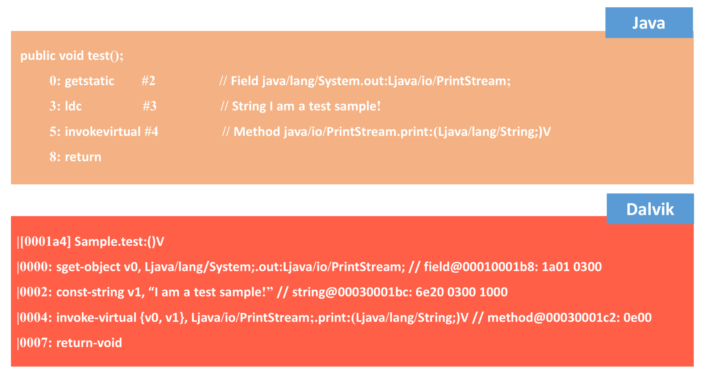
它们的格式和指令都有很明显的差异。关于 Java 字节码的介绍，你可以参考JVM 文档。对于 Dalvik 字节码来说，你可以参考 Android 的官方文档。它们的主要区别有：
- 体系结构。Java 虚拟机是基于栈实现，而 Android 虚拟机是基于寄存器实现。在 ARM 平台，寄存器实现性能会高于栈实现。
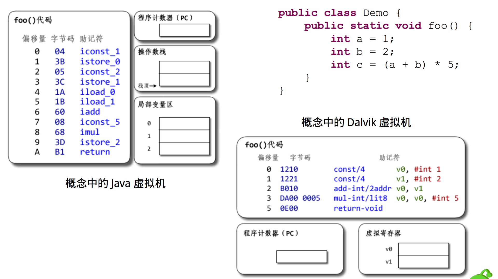
-
格式结构。对于 Class 文件，每个文件都会有自己单独的常量池以及其他一些公共字段。对于 Dex 文件，整个 Dex 中的所有 Class 共用同一个常量池和公共字段，所以整体结构更加紧凑，因此也大大减少了体积。
-
指令优化。Dalvik 字节码对大量的指令专门做了精简和优化，如下图所示，相同的代码 Java 字节码需要 100 多条，而 Dalvik 字节码只需要几条。
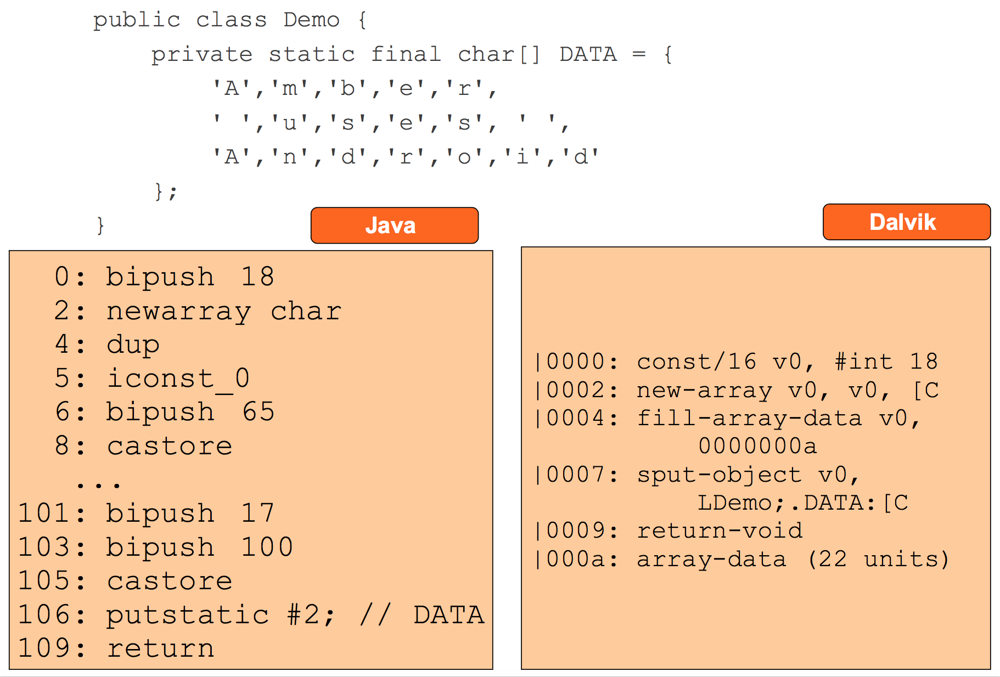
关于 Java 字节码和 Dalvik 字节码的更多介绍，你可以参考下面的资料：
编译插桩的三种方法
AspectJ 和 ASM 框架的输入和输出都是 Class 文件，它们是我们最常用的 Java 字节码处理框架。
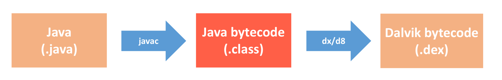
1. AspectJ
AspectJ是 Java 中流行的 AOP（aspect-oriented programming）编程扩展框架，网上很多文章说它处理的是 Java 文件，其实并不正确，它内部也是通过字节码处理技术实现的代码注入。
从底层实现上来看，AspectJ 内部使用的是BCEL框架来完成的，不过这个库在最近几年没有更多的开发进展，官方也建议切换到 ObjectWeb 的 ASM 框架。关于 BCEL 的使用，你可以参考《用 BCEL 设计字节码》这篇文章。
从使用上来看，作为字节码处理元老，AspectJ 的框架的确有自己的一些优势。
-
成熟稳定。从字节码的格式和各种指令规则来看，字节码处理不是那么简单，如果处理出错，就会导致程序编译或者运行过程出问题。而 AspectJ 作为从 2001 年发展至今的框架，它已经很成熟，一般不用考虑插入的字节码正确性的问题。
-
使用简单。AspectJ 功能强大而且使用非常简单，使用者完全不需要理解任何 Java 字节码相关的知识，就可以使用自如。它可以在方法（包括构造方法）被调用的位置、在方法体（包括构造方法）的内部、在读写变量的位置、在静态代码块内部、在异常处理的位置等前后，插入自定义的代码，或者直接将原位置的代码替换为自定义的代码。
在专栏前面文章里我提过 360 的性能监控框架ArgusAPM，它就是使用 AspectJ 实现性能的监控，其中TraceActivity是为了监控 Application 和 Activity 的生命周期。
// 在 Application onCreate 执行的时候调用 applicationOnCreate 方法@Pointcut("execution(* android.app.Application.onCreate(android.content.Context)) && args(context)")public void applicationOnCreate(Context context) { }// 在调用 applicationOnCreate 方法之后调用 applicationOnCreateAdvice 方法@After("applicationOnCreate(context)")public void applicationOnCreateAdvice(Context context) { AH.applicationOnCreate(context);}你可以看到，我们完全不需要关心底层 Java 字节码的处理流程，就可以轻松实现编译插桩功能。关于 AspectJ 的文章网上有很多，不过最全面的还是官方文档，你可以参考《AspectJ 程序设计指南》和The AspectJ 5 Development Kit Developer’s Notebook，这里我就不详细描述了。
但是从 AspectJ 的使用说明里也可以看出它的一些劣势，它的功能无法满足我们某些场景的需要。
-
切入点固定。AspectJ 只能在一些固定的切入点来进行操作，如果想要进行更细致的操作则无法完成，它不能针对一些特定规则的字节码序列做操作。
-
正则表达式。AspectJ 的匹配规则是类似正则表达式的规则，比如匹配 Activity 生命周期的 onXXX 方法，如果有自定义的其他以 on 开头的方法也会匹配到。
-
性能较低。AspectJ 在实现时会包装自己的一些类，逻辑比较复杂，不仅生成的字节码比较大，而且对原函数的性能也会有所影响。
我举专栏第 7 期启动耗时Sample的例子，我们希望在所有的方法调用前后都增加 Trace 的函数。如果选择使用 AspectJ，那么实现真的非常简单。
@Before("execution(* **(..))")public void before(JoinPoint joinPoint) { Trace.beginSection(joinPoint.getSignature().toString());} @After("execution(* **(..))")public void after() { Trace.endSection();}但你可以看到经过 AspectJ 的字节码处理，它并不会直接把 Trace 函数直接插入到代码中，而是经过一系列自己的封装。如果想针对所有的函数都做插桩，AspectJ 会带来不少的性能影响。
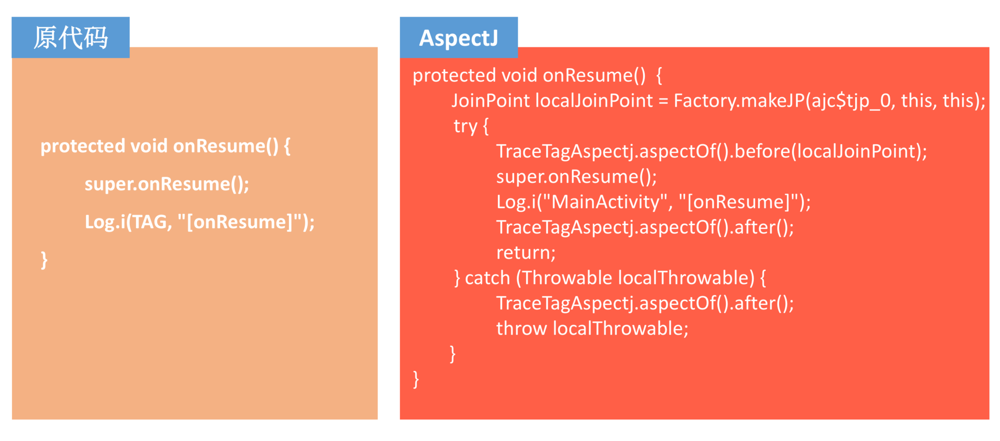
不过大部分情况，我们可能只会插桩某一小部分函数，这样 AspectJ 带来的性能影响就可以忽略不计了。如果想在 Android 中直接使用 AspectJ，还是比较麻烦的。这里我推荐你直接使用沪江的AspectJX框架，它不仅使用更加简便一些，而且还扩展了排除某些类和 JAR 包的能力。如果你想通过 Annotation 注解方式接入，我推荐使用 Jake Wharton 大神写的Hugo项目。
虽然 AspectJ 使用方便，但是在使用的时候不注意的话还是会产生一些意想不到的异常。比如使用 Around Advice 需要注意方法返回值的问题，在 Hugo 里的处理方法是将 joinPoint.proceed() 的返回值直接返回，同时也需要注意Advice Precedence的情况。
2. ASM
如果说 AspectJ 只能满足 50% 的字节码处理场景，那ASM就是一个可以实现 100% 场景的 Java 字节码操作框架，它的功能也非常强大。使用 ASM 操作字节码主要的特点有：
-
操作灵活。操作起来很灵活，可以根据需求自定义修改、插入、删除。
-
上手难。上手比较难，需要对 Java 字节码有比较深入的了解。
为了使用简单，相比于 BCEL 框架，ASM 的优势是提供了一个 Visitor 模式的访问接口（Core API），使用者可以不用关心字节码的格式，只需要在每个 Visitor 的位置关心自己所修改的结构即可。但是这种模式的缺点是，一般只能在一些简单场景里实现字节码的处理。
事实上，专栏第 7 期启动耗时的 Sample 内部就是使用 ASM 的 Core API，具体你可以参考MethodTracer类的实现。从最终效果上来看，ASM 字节码处理后的效果如下。
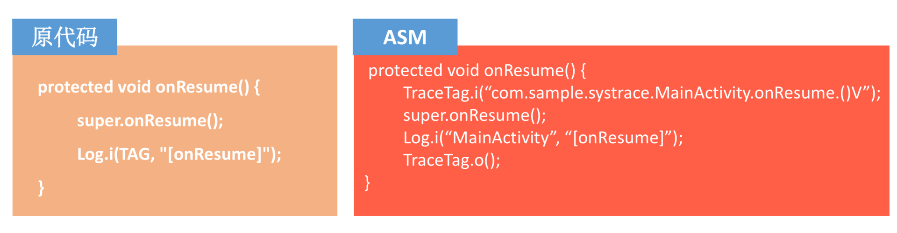
相比 AspectJ，ASM 更加直接高效。但是对于一些复杂情况，我们可能需要使用另外一种 Tree API 来完成对 Class 文件更直接的修改，因此这时候你要掌握一些必不可少的 Java 字节码知识。
此外，我们还需要对 Java 虚拟机的运行机制有所了解，前面我就讲到 Java 虚拟机是基于栈实现。那什么是 Java 虚拟机的栈呢？，引用《Java 虚拟机规范》里对 Java 虚拟机栈的描述：
每一条 Java 虚拟机线程都有自己私有的 Java 虚拟机栈，这个栈与线程同时创建，用于存储栈帧（Stack Frame）。
正如这句话所描述的，每个线程都有的自己栈，所以在多线程应用程序中多个线程就会有多个栈，每个栈都有自己的栈帧。
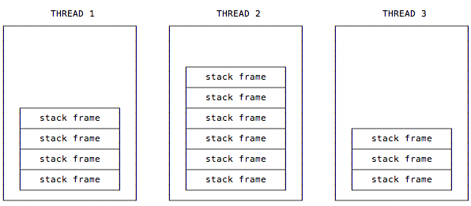
如下图所示，我们可以简单认为栈帧包含 3 个重要的内容：本地变量表（Local Variable Array）、操作数栈（Operand Stack）和常量池引用（Constant Pool Reference）。
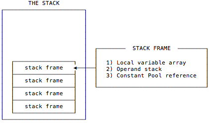
-
本地变量表。在使用过程中，可以认为本地变量表是存放临时数据的，并且本地变量表有个很重要的功能就是用来传递方法调用时的参数，当调用方法的时候，参数会依次传递到本地变量表中从 0 开始的位置上，并且如果调用的方法是实例方法，那么我们可以通过第 0 个本地变量中获取当前实例的引用，也就是 this 所指向的对象。
-
操作数栈。可以认为操作数栈是一个用于存放指令执行所需要的数据的位置，指令从操作数栈中取走数据并将操作结构重新入栈。
由于本地变量表的最大数和操作数栈的最大深度是在编译时就确定的，所以在使用 ASM 进行字节码操作后需要调用 ASM 提供的 visitMaxs 方法来设置 maxLocal 和 maxStack 数。不过，ASM 为了方便用户使用，已经提供了自动计算的方法，在实例化 ClassWriter 操作类的时候传入 COMPUTE_MAXS 后，ASM 就会自动计算本地变量表和操作数栈。
ClassWriter(ClassWriter.COMPUTE_MAXS)下面以一个简单的“1+2“为例，它的操作数以 LIFO（后进先出）的方式进行操作。
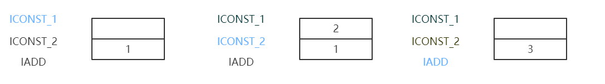
ICONST_1 将 int 类型 1 推送栈顶，ICONST_2 将 int 类型 2 推送栈顶，IADD 指令将栈顶两个 int 类型的值相加后将结果推送至栈顶。操作数栈的最大深度也是由编译期决定的，很多时候 ASM 修改后的代码会增加操作数栈最大深度。不过 ASM 已经提供了动态计算的方法，但同时也会带来一些性能上的损耗。
在具体的字节码处理过程中，特别需要注意的是本地变量表和操作数栈的数据交换和 try catch blcok 的处理。
- 数据交换。如下图所示，在经过 IADD 指令操作后，又通过 ISTORE 0 指令将栈顶 int 值存入第 1 个本地变量中，用于临时保存，在最后的加法过程中，将 0 和 1 位置的本地变量取出压入操作数栈中供 IADD 指令使用。关于本地变量和操作数栈数据交互的指令，你可以参考虚拟机规范，里面提供了一系列根据不同数据类型的指令。
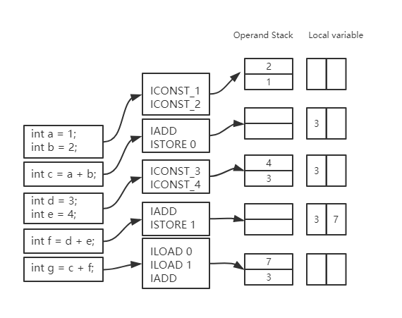
- 异常处理。在字节码操作过程中需要特别注意异常处理对操作数栈的影响，如果在 try 和 catch 之间抛出了一个可捕获的异常，那么当前的操作数栈会被清空，并将异常对象压入这个空栈中，执行过程在 catch 处继续。幸运的是，如果生成了错误的字节码，编译器可以辨别出该情况并导致编译异常，ASM 中也提供了字节码 Verify的接口，可以在修改完成后验证一下字节码是否正常。
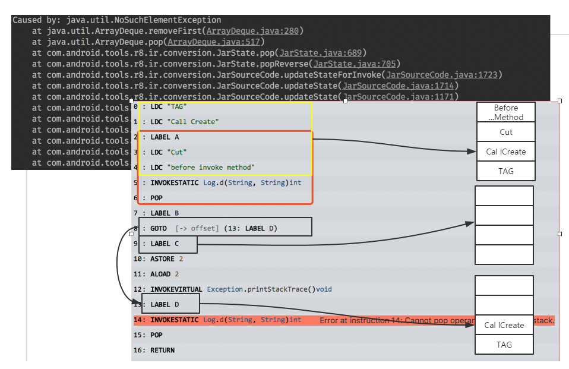
如果想在一个方法执行完成后增加代码，ASM 相对也要简单很多，可以在字节码中出现的每一条 RETURN 系或者 ATHROW 的指令前，增加处理的逻辑即可。
3. ReDex
ReDex 不仅只是作为一款 Dex 优化工具，它也提供了很多的小工具和文档里没有提到的一些新奇功能。比如在 ReDex 里提供了一个简单的 Method Tracing 和 Block Tracing 工具，这个工具可以在所有方法或者指定方法前面插入一段跟踪代码。
官方提供了一个例子，用来展示这个工具的使用，具体请查看InstrumentTest。这个例子会将InstrumentAnalysis的 onMethodBegin 方法插入到除黑名单以外的所有方法的开头位置。具体配置如下：
"InstrumentPass" : { "analysis_class_name": "Lcom/facebook/redextest/InstrumentAnalysis;", // 存在桩代码的类 "analysis_method_name": "onMethodBegin", // 存在桩代码的方法 "instrumentation_strategy": "simple_method_tracing", // 插入策略，有两种方案，一种是在方法前面插入 simple_method_tracing，一种是在 CFG 的 Block 前后插入 basic_block_tracing}ReDex 的这个功能并不是完整的 AOP 工具，但它提供了一系列指令生成 API 和 Opcode 插入 API，我们可以参照这个功能实现自己的字节码注入工具，这个功能的代码在Instrument.cpp中。
这个类已经将各种字节码特殊情况处理得相对比较完善，我们可以直接构造一段 Opcode 调用其提供的 Insert 接口即可完成代码的插入，而不用过多考虑可能会出现的异常情况。不过这个类提供的功能依然耦合了 ReDex 的业务，所以我们需要提取有用的代码加以使用。
由于 Dalvik 字节码发展时间尚短，而且因为 Dex 格式更加紧凑，修改起来往往牵一发而动全身。并且 Dalvik 字节码的处理相比 Java 字节码会更加复杂一些，所以直接操作 Dalvik 字节码的工具并不是很多。
市面上大部分需要直接修改 Dex 的情况是做逆向，很多同学都采用手动书写 Smali 代码然后编译回去。这里我总结了一些修改 Dalvik 字节码的库。
-
ASMDEX，开发者是 ASM 库的开发者，但很久未更新了。
-
Dexter，Google 官方开发的 Dex 操作库，更新很频繁，但使用起来很复杂。
-
Dexmaker，用来生成 Dalvik 字节码的代码。
-
Soot，修改 Dex 的方法很另类，是先将 Dalvik 字节码转成一种 Jimple three-address code，然后插入 Jimple Opcode 后再转回 Dalvik 字节码，具体可以参考例子。
总结
今天我介绍了几种比较有代表性的框架来讲解编译插桩相关的内容。代码生成、代码监控、代码魔改以及代码分析，编译插桩技术无所不能，因此需要我们充分发挥想象力。
对于一些常见的应用场景，前辈们付出了大量的努力将它们工具化、API 化，让我们不需要懂得底层字节码原理就可以轻松使用。但是如果真要想达到随心所欲的境界，即使有类似 ASM 工具的帮助，也还是需要我们对底层字节码有比较深的理解和认识。
当然你也可以成为“前辈”，将这些场景沉淀下来，提供给后人使用。但有的时候“能力限制想象力”，如果能力不够，即使想象力到位也无可奈何。
课后作业
你使用过哪些编译插桩相关的工具？使用编译插桩实现过什么功能？欢迎留言跟我和其他同学一起讨论。
今天的课后作业是重温专栏第 7 期练习 Sample的实现原理，看看它内部是如何使用 ASM 完成 TAG 的插桩。在今天的Sample里，我也提供了一个使用 AspectJ 实现的版本。想要彻底学会编译插桩的确不容易，单单写一个高效的 Gradle Plugin 就不那么简单。
除了上面的两个 Sample，我也推荐你认真看看下面的一些参考资料和项目。
-
基于 Javassist 的字节码处理工具：DroidAssist
COMMUNITY NOTES
读者评论
看到这篇文章表示非常激动，这段时间自己也在尝试了解和使用编译插桩的相关技术，编译插桩涉及的东西很多，特别是 ASM 与 Transform 结合后产生的一些列化学反应，比如无埋点、增量编译、Instant Run 等，感觉像是打开了一个新世界的大门。给大家安利一个 IntelliJ 插件 - ASM Bytecode Outline，可以用来帮助编写字节码。再次感谢绍文大大的精彩文章！
推荐使用ByteBuddy
推荐一个简单轻量的asm框架lancet，https://github.com/eleme/lancet，通过这个库实现业务代码的动态监测
这篇含金量是目前整个专栏最好的，谢谢
文哥牛逼！这篇至少要看个十几遍~玩溜asm估计要练习个几个月了
作为从Java后端转过来的老用户，aspectj是不二选择
请问，AS3.1.3，安装ASM Bytecode Outline后，没有显示字节码是什么情况？
请问Systrace在Windows上是不是不支持，我试过在Mac上可以用的，但是Windows上就报错，Google了下好像很多人反馈这个但是没有解决方案！
嗯很不错啊。之前一直对插桩只有印象，但具体做什么还是不了解，但今天看了这篇文章，受益匪浅。原来插桩的技术，自己之前就用过了。这个是自己之前利用APT和JavaPoet写的一个开发工具，大家可以交流探讨一下。https://github.com/splm/WeBase也希望大家能多点几个星。
另外一个字节码处理工具javaasist也不错哦使用比asm简单，达到的效果和asm一致(直接插入代码，不像aspectj需要生成包装函数)